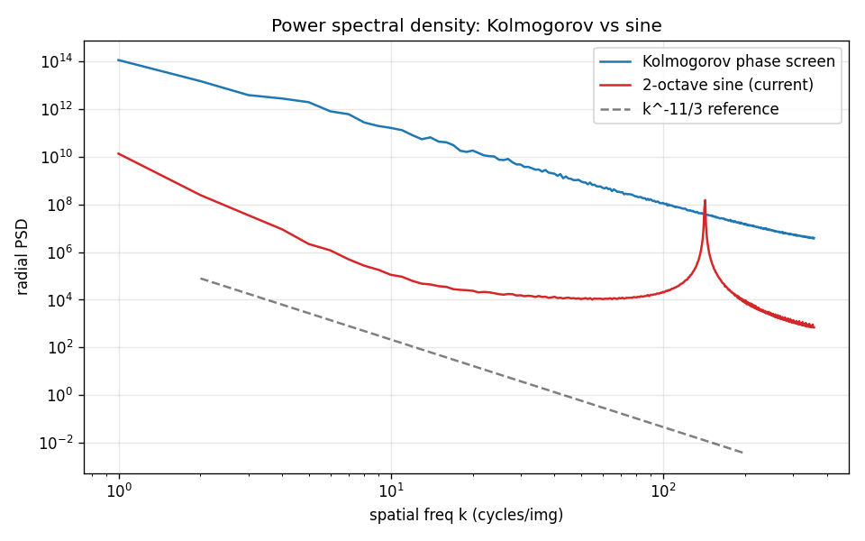
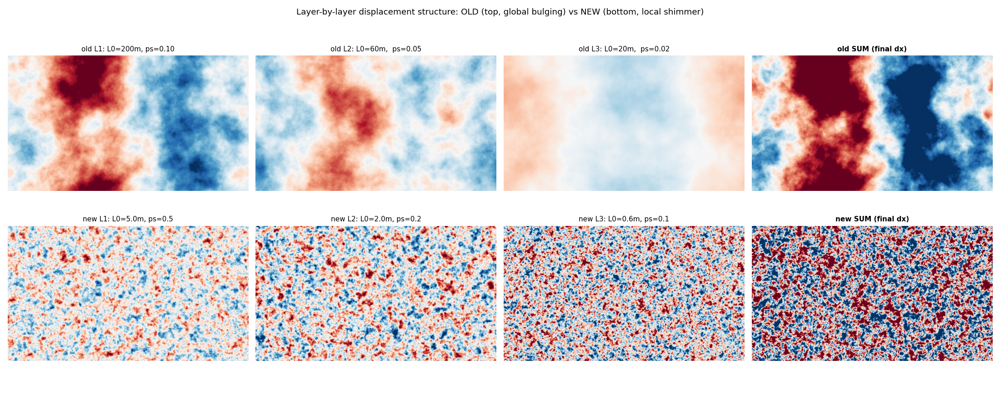

How Streets at Night turns Kolmogorov atmospheric turbulence into a per-pixel displacement field, then warps a rendered city image with it. Aimed at someone comfortable with linear systems and Fourier analysis.
Atmospheric heat shimmer (the wavy distortion you see above hot pavement, jet exhaust, or distant scenery on a hot day) is an optical refraction phenomenon. The atmosphere is a stack of air parcels at slightly different temperatures and densities. Refractive index $n$ varies with density:
\[ n(\mathbf{r}, t) - 1 \;\propto\; \rho(\mathbf{r}, t) \;\propto\; \frac{P}{T(\mathbf{r}, t)} \]where $P$ is pressure (≈ constant), $T$ is local temperature, and $\rho$ is air density. Hot air is less dense, so $n$ drops. Light passing through these inhomogeneities accumulates a small, position-dependent phase delay; the resulting wavefront is no longer planar, so when we project the image onto the focal plane each pixel appears to come from a slightly displaced location.
If the atmosphere were static this would just be a fixed geometric distortion — a constant lens. What makes it shimmer is that the refractive-index field is turbulent and time-varying, and crucially, statistically self-similar across a wide range of scales. That self-similarity is the property we exploit.
Kolmogorov's 1941 theory of homogeneous isotropic turbulence (K41) predicts that, in the inertial subrange (between the energy-injection scale and the viscous dissipation scale), the energy spectrum follows
\[ E(k) \;=\; C\, \varepsilon^{2/3}\, k^{-5/3} \]where $k = |\mathbf{k}|$ is the spatial wavenumber and $\varepsilon$ is the energy dissipation rate. This is the celebrated $-5/3$ law. For atmospheric optics what matters is not the velocity spectrum but the refractive-index structure function, which inherits the same scaling, leading to a 2D phase power spectral density
\[ \Phi_\phi(k) \;=\; 0.023\, r_0^{-5/3}\, k^{-11/3} \](The $-11/3$ rather than $-5/3$ comes from the fact that we are looking at the spectrum of integrated phase along a ray, and at the radial distribution of 2D power.) The constant $r_0$ is the Fried parameter — the diameter over which the rms wavefront error reaches one radian. Smaller $r_0$ ⇒ stronger turbulence.
Pure $k^{-11/3}$ diverges at $k \to 0$ (energy-injection scale → infinity), so we use the Von Karman form which adds a finite outer scale $L_0$:
\[ \boxed{\;\Phi_\phi(k) \;=\; 0.023\, r_0^{-5/3}\, \left(k^2 + \tfrac{1}{L_0^2}\right)^{-11/6}\;} \]Below $k \sim 1/L_0$ the spectrum flattens into a plateau; above it the spectrum follows the inertial-range $-11/3$ slope. This single equation is the engine behind everything that follows.

The recipe to produce a 2D random field with prescribed power spectrum $\Phi(k)$ is a textbook trick:
Concretely (lifted from kolmogorov_screen_fft):
fy, fx = np.fft.fftfreq(H, ps)[:,None], np.fft.fftfreq(W, ps)[None,:]
k2 = (2π·fx)² + (2π·fy)²
psd = 0.023 · r0^(-5/3) · (k2 + 1/L0²)^(-11/6)
psd[0,0] = 0 # zero-mean field
noise = randn(H,W) + 1j·randn(H,W)
field = ifft2( noise · sqrt(psd) ) · const
return field.realThe ps (pixel scale, m/px) is critical: it is what ties the physical Von Karman parameters $r_0, L_0$ to the pixel grid. The eddy size in pixels is approximately $L_0 / \mathrm{ps}$. We exploit this aggressively when picking layer parameters.

aotools.PhaseScreenKolmogorov?The aotools library implements an infinite phase screen via a Cholesky-factored autoregressive process: generate one column at a time, conditional on a window of previous columns. Beautiful for adaptive-optics simulations, but the constructor's matrix factorization is $\mathcal{O}(n^3)$. At our 2048×2048 working size it took 23 seconds; at 4096 it would have been minutes. The pure-FFT approach above generates a 4096×720 screen in ~120 ms because all the heavy lifting is one inverse FFT.
Real atmospheric turbulence isn't a single homogeneous medium. Distinct layers — boundary layer, free atmosphere, jet stream, etc. — sit at different altitudes, each with its own effective $r_0$, outer scale $L_0$, and wind vector. They contribute additively to the total integrated phase along the optical path:
\[ \phi_\mathrm{total}(\mathbf{r}, t) \;=\; \sum_{\ell=1}^{N} w_\ell\, \phi_\ell\!\left(\mathbf{r} - \mathbf{v}_\ell\, t\right) \]where $\mathbf{v}_\ell$ is the layer's wind vector and $w_\ell$ is a relative weight (we just normalise each layer's screen to unit standard deviation, then scale by $w_\ell$, so the weights act like dimensionless mix coefficients).
In scene_config.toml the three layers are:
| Layer | $r_0$ (m) | $L_0$ (m) | ps (m/px) | eddy size | weight | wind (px/s) |
|---|---|---|---|---|---|---|
| 1 (slow, mid-scale) | 0.10 | 2.5 | 0.5 | 5 px | 0.6 | (35, 4) |
| 2 (mid) | 0.10 | 1.0 | 0.2 | 5 px | 0.8 | (70, –3) |
| 3 (fast, fine) | 0.10 | 0.3 | 0.1 | 3 px | 1.0 | (120, 8) |
The layers' winds blow in different directions, so the summed field has no preferred propagation direction — exactly what kills the "wave-front giveaway" the old sine implementation had.
Generating a fresh phase screen per frame is expensive (~120 ms each, for three layers × two screens — too slow). Instead we use Taylor's frozen-turbulence hypothesis: turbulent eddies are advected by the mean wind faster than they evolve internally, so
\[ \phi(\mathbf{r}, t) \;\approx\; \phi(\mathbf{r} - \mathbf{v}\, t,\; 0) \]over time intervals comparable to one eddy turnover. We exploit this by generating one wide phase screen per layer (4096 × 720 in our config) at startup, then sliding a 1280-pixel window across it at each frame:
Cost per frame, per layer: one numpy fancy-index slice plus four-tap bilinear interpolation between adjacent rows and columns of the screen — a few milliseconds total. The screen is built once.
A pixel imaging the foreground (e.g. a road 4 km from the camera) sees a much shorter atmospheric path than a pixel imaging the horizon (~20 km). Cumulative phase variance scales with path length, so distortion magnitude should scale with depth.
For each screen pixel we cast a ray $\mathbf{r}(\tau) = \mathbf{c} + \tau\, \mathbf{d}$ from camera position $\mathbf{c}$ in direction $\mathbf{d}$ (computed from the inverse view & projection matrices) and intersect with the ground plane $z = 0$:
\[ \tau^* \;=\; -\frac{c_z}{d_z}\quad\text{(if $d_z<0$, otherwise sky)} \]The atmospheric path length to the ground hit is $\tau^*$. We clamp to max_distance_m (default 20 km — beyond this the existing atmospheric haze pass already fades the scene to nothing, so heat shimmer should saturate there) and form
with exponent $p$ (default 1.5) controlling the falloff curve. The final per-pixel displacement is
\[ \big(\delta x, \delta y\big) \;=\; A \cdot s(x,y) \cdot \sum_\ell \phi_\ell(\mathbf{r} - \mathbf{v}_\ell t) \]where $A$ is the amplitude_px knob (default 0.5 px at the horizon).
sky_distance_factor × max_distance_m — letting stars and the upper atmosphere shimmer at a controllable level (default ½ × max ⇒ ~35% of max ground shimmer, since 0.51.5 ≈ 0.354).grid_sample on Apple MPSGiven the per-pixel displacement field $(\delta x, \delta y)$, we warp the base image $I$ by
\[ I_\mathrm{out}(x, y) \;=\; I\!\left(x + \delta x(x,y),\; y + \delta y(x,y)\right) \]using bilinear interpolation. The base frame is uploaded once to the GPU when the camera moves; only the displacement field crosses the host-device boundary each frame. Apple's MPS backend hits ~150 fps end-to-end at 1280×720, with the warp itself taking ~1.2 ms.
Why bilinear and not nearest neighbour? With sub-pixel displacements (we live in the 0.1–1 px range most of the time), nearest-neighbour rounding causes visible step artifacts on diagonal edges. Bilinear smooths these out and the speed cost on MPS is negligible.
The benchmark from the investigation:
| Method | Median ms | fps | Quality |
|---|---|---|---|
| numpy fancy index (old) | 17.0 | 59 | nearest, jaggy |
| scipy.ndimage.map_coordinates | 58.5 | 17 | bilinear |
| torch grid_sample CPU | 8.5 | 118 | bilinear |
| torch grid_sample MPS (preloaded) | 1.2 | 805 | bilinear |
Several things are deliberately wrong in service of a tractable real-time pipeline. None of these matter for an artistic still or short loop, but it's worth being explicit about them.
src/streets_at_night/rendering/heat_haze.py — phase screen, depth map, distance scale, HazeField, TorchWarper, HeatHaze orchestrator.src/streets_at_night/config/schema.py — HeatHazeConfig, HeatHazeLayerConfig.src/streets_at_night/main.py — cmd_preview (live preview wiring) and cmd_animate (static-image animation).tests/test_heat_haze.py — unit tests for each component.investigation/ — the prototype scripts and visualisations that drove the design decisions; investigation/FINDINGS.md has the full investigation notes.torch.nn.functional.grid_sample is the workhorse for the per-frame bilinear warp on the Apple GPU. The base frame stays resident on-device between frames.If something in here is wrong or unclear, the prototypes in investigation/ are the ground-truth derivation: each numbered script tackled one piece of the pipeline and produced a measurable artifact (PSD plots, timing tables, side-by-side animations). The final implementation is just a tidied-up version of those.